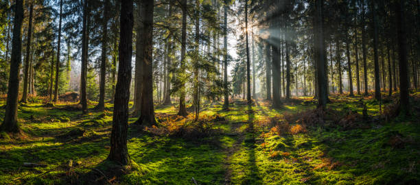

This page will talk about the Forests and their main issue!
The Forests holds some of the greatest and more important plant live to ever exist! one example being trees providing air for us humans and animals to breath in mainly, but also for other local plant lives that benefit from these trees that help growth and develop them to their fullest! just showing how key trees are for everything!
However, there has been a growing concern and worry about the large amount of Woodcutting taking place around the whole. As more trees get cut down rapidly and there's growth is only slowly increasing naturally, whole forests get completely wiped out by the desire of materials that wood provides for humans.
not only does this displace large amounts of spieces that required these trees to survive and function off on, but it's also preventing more clean air for us to breath in while also not being able to absorb these gases that prevent our plant from overheating.
However there a soluation that will help lessen the impact woodcutting does on the plant. Replanting trees while it takes it time to fully grow into a proper tree, it's far better than keeping these forests without any trees to shield these ecosytems that require trees to live.
We at GAIA have serveal replantation projects across the world to help limit the damage dealt by large-scale woodcutting in these regions and we hope that governments take a firmly stance on aidding replanting effects to help maintain these native ecosytems to their countries.